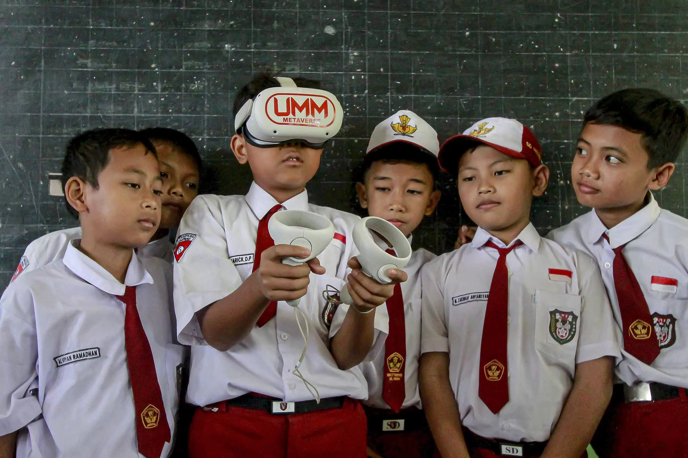

Sabtu, 4 Januari 2025 05:14:52 PM
SDN-BANGKIT
Beranda
Berita
Artikel
Kontak
Selamat Datang di Website Sekolah
SDN-Bangkit - Sekolah Penggerak Menuju Pendidikan Berkualitas
SELENGKAPNYA
BERITA TERKINI
2 januri 2025
Belajar website benara
Dibaca 0 Kali
SELENGKAPNYA
ARTIKEL PENDIDIKAN

3 januari 2025
Keunggulan Proyek media interaktif
Dibaca 0 kali
SELENGKAPNYA